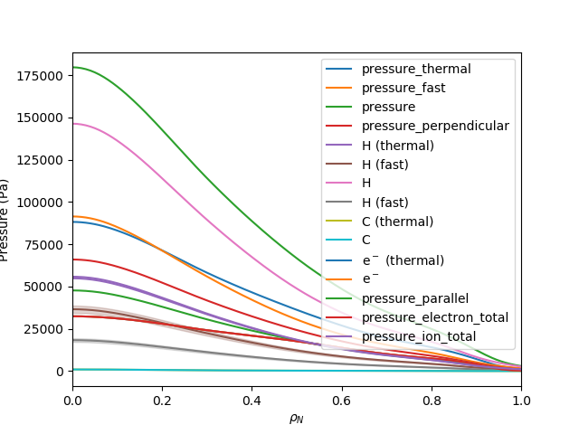
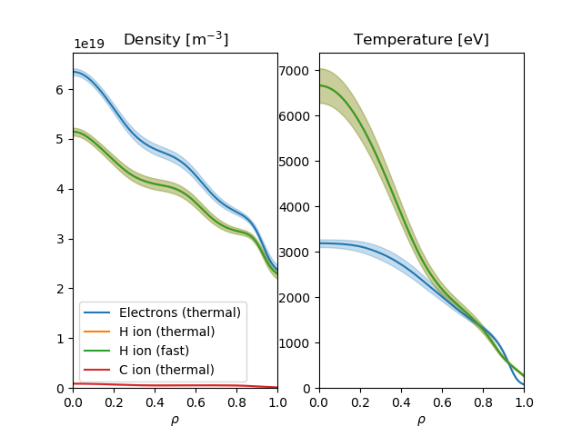
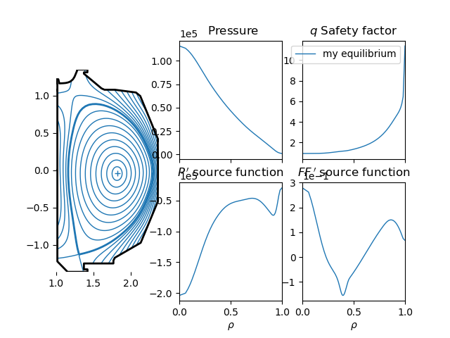

Note
Click here to download the full example code
OMAS plot examples¶
This example loads some data from S3, augments the ODS with pressure information, and generates some plots
- 
- 
- 
from __future__ import print_function, division, unicode_literals
from matplotlib.pyplot import show
from omas import *
# load some data from S3
ods = load_omas_s3('OMFITprofiles_sample', user='omas_shared')
# augment ODS with pressure information
ods.consistency_check = False # NOTE: some extra pressures are calculated if IMAS consistency_check = False
ods.physics_core_profiles_pressures()
# omas plot for pressures
ods.plot_core_profiles_pressures()
show()
# omas plot for core profiles
ods.plot_core_profiles_summary()
show()
# omas plot for equilibrium
omas_plot.equilibrium_summary(ods, linewidth=1, label='my equilibrium')
show()